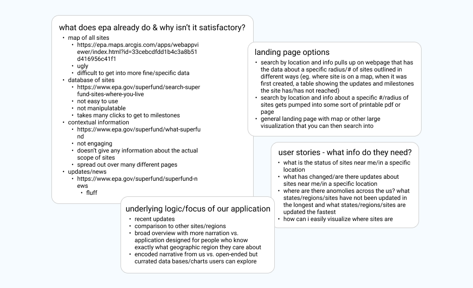

Superfund Search
A tool for EPA data exploration
Overview
Superfund Search is a tool that allows users to investigate all EPA-designated toxic waste Superfund sites. This project was born out of the graduate-level Stanford journalism course “Building News Applications.” I joined a team of two other students and we spend the course of the quarter conceptualizing and building this project. My role on the team was head of design and front-end development. The scope of my responsibilities included gaining input and design ideas from my teammates, creating all designs including data visualizations, and then translating our designs into useable code. I also played a major supporting role in doing the back-end data cleaning, synthesizing, and manipulating work.
Year
2021
2021
Skills
UI & UX Design
Front-end dev
Data science & visualizations
Templating
UI & UX Design
Front-end dev
Data science & visualizations
Templating
Tools
Figma
HTML & CSS
Python
Figma
HTML & CSS
Python
Design Process
For this project, my teammates and I followed the standard design thinking process although with a journalistic lens. Our team also adopted a Scrum framework for the duration of the project. I led thrice-weekly standups where we kept our team on track by focusing on three simple questions: what did you accomplish since the last meeting?, what are you working on until the next meeting?, and what is getting in your way or keeping you from doing your job?
Empathize
The empathize stage of our design process involved a lot of research into the state of information about EPA toxic waste sites and examples of other data-heavy news applications The EPA currently maintains a digital list and map of superfund sites but their website is difficult to use and not visually appealing. Additionally, we found that there is no accessible online information that analyses superfund site data and allows the average person to compare statistics about sites. Our challenge was not only to create the data framework and a website from scratch that filled these needs, but to distill the scope of our project into something we could realistically finish in 10 weeks.
Define
In order to better focus our project, we moved into the define stage of the design process. At this stage we create the journalist’s version of user stories: user beats; and developed our goals for the project. Our high level goals for Superfund Search were:
- to create a website that would allow the average concerned citizen or journalist to easily find information about toxic sites in their area
- to synthesize and analyze clean-up timeline data to allow users to better understand how Superfund Sites relevant to them compare to others and advocate for better environmental responsibility
User stories developed to help us understand our beat.

Sample results of some of our brainstorming sessions.
Ideate & Prototype
I started out the ideation stage of the design process by asking my team members to create simple paper wireframes of what a potential website homepage might look like. I then took our three paper designs and distilled them into one wireframe. After getting feedback and brainstorming more with my team, I continued to iterate on the wireframe. Because I was hand-building our website from scratch on a tight timeline, as soon as our team agreed on a final wireframe design, I began coding the website. I took an iterative approach to the final website design including elements such as color and typography, and utilized feedback from my teammates to transform our wireframe into a final project living online.

Paper wireframing.
As the designer, it was my job to distill several paper wireframes into one digital one.
As the designer, it was my job to distill several paper wireframes into one digital one.
The landing page.
The goal with the design of Superfund Search was to showcase all of the statistical calculations my team computed. The color palette and typography clue in the user to the scientific content while still remaining trendy enough to catch the user’s attention and show that our tool is not your standard government design aesthetic.
The goal with the design of Superfund Search was to showcase all of the statistical calculations my team computed. The color palette and typography clue in the user to the scientific content while still remaining trendy enough to catch the user’s attention and show that our tool is not your standard government design aesthetic.
The map function to allow users to explore sites.
While originally our team wanted to build a search function for ease of use, back-end constraints drove us to explore less technical options. We decided to use the map component because it allowed us to compromise between back-end technicality and user experience. After researching and testing, we decided integrating a Flourish map was our best option.
While originally our team wanted to build a search function for ease of use, back-end constraints drove us to explore less technical options. We decided to use the map component because it allowed us to compromise between back-end technicality and user experience. After researching and testing, we decided integrating a Flourish map was our best option.
Each Superfund Site in the US has one of the webpages.
Similar to the homepage, my design goals were centered around presenting the statistics and data visualizations as cleanly as possible so that users could quickly find the information they were looking for. By keeping extraneous or superfluous information at bay, the individual site pages allow our data to shine.
Similar to the homepage, my design goals were centered around presenting the statistics and data visualizations as cleanly as possible so that users could quickly find the information they were looking for. By keeping extraneous or superfluous information at bay, the individual site pages allow our data to shine.
Test
In order to test our project, our team presented our website to our classmates and professor. We guided our feedback session by referring to our original project goals and design process.
My Takeaways
- An awareness of back-end constraints was essential to defining our project scope, and ultimately limited a lot of the design components of this product.
- Even on such a small team, utilizing a scrum framework and keeping standups focused and agile was essential to our success.
- This project was a really exciting opportunity to grow my coding skills, and I loved working cross-functionally across more technical aspects of design.